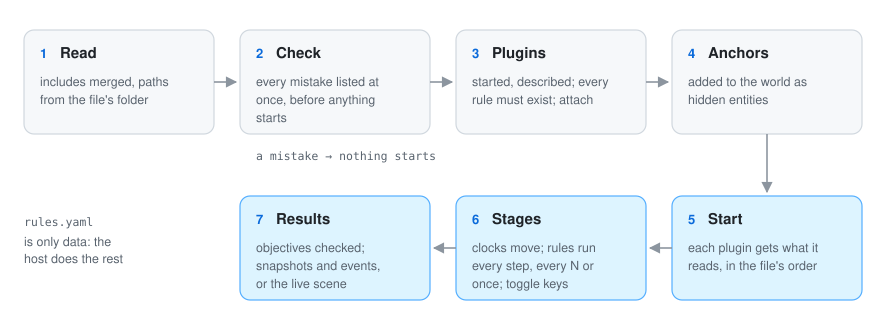

A rules file is the recipe of a simulation. In one readable YAML file you say which simulators to use, what each one should do and with which numbers, how time passes, and what the result must look like. You never write code to set up a simulation: you write a rules file.
A few things hold everywhere: relative paths start at the rules file’s own folder, ~/ starts at
your home folder, and plugins are told where the rules file lives (GO_SIMULATOR_RULES_DIRECTORY)
so they find your files the same way.

scene_style: style.yaml # optional: draw batches with go-scene-builder's rules
anchors: # places the story fixes
- {id: main_gate, role: gate, at: [-2.5, 1.2], source: "chapter 3 of the story"}
- {from: anchors.geojson, role: obstacle}
plugins:
- name: terrain
command: [go-simulator-terrain] # program and arguments
- name: urban
command: [go, run, .]
directory: ../go-simulator-urban # where the program runs
- name: motion
builtin: true # a plugin the host program carries inside
stages:
- name: town
clock: {unit: year, from: 0, to: 100, step: 1, pace: 0.4}
snapshots: [0, 50, 100]
snapshot_fields: [elevation]
rules:
- rule: relief
with: {path: relief.json, origin: [6, 4.5]}
- rule: city
name: my_town
with: {include: town_scenario.yaml, seed: 8}
- {rule: expand, with: {city: my_town}}
- {rule: walls, with: {city: my_town}}
- {rule: space_syntax, with: {city: my_town}, every: 5}
- {rule: indicators, with: {city: my_town, years: [50, 100]}}
objectives:
- {name: walled by year 60, at: 60, count: {kind: wall}}
- {name: about 6,000 people, at: 100, event: indicators, value: inhabitants, near: 6000, tolerance: 0.05}
- name: weather
clock: realtime
rules:
- {rule: day_cycle, with: {seconds_per_day: 120}, toggle_key: T}
- {rule: gusts, enabled: false, toggle_key: G}
Read it top to bottom: two places are fixed (anchors), three plugins are started, and two stages run side by side, a town growing a year at a time and the weather moving in real time.
pluginsEach entry starts one simulator.
| Key | Meaning |
|---|---|
name |
How the rules refer to it (plugin/rule when several offer the same rule); unique |
command |
Program and arguments. A bare name is looked up in the PATH; a path with a folder starts at the rules file’s folder |
directory |
Where the program runs (default: the rules file’s folder) |
builtin |
true for a plugin compiled into the host program, found by name; no command |
The host starts every plugin, asks for its description (describe) and checks every rule exists.
stagesA stage is a group of rules that share a clock. Several stages can run together on the same world.
| Key | Meaning |
|---|---|
name |
Unique |
clock |
realtime, or {unit, from, to, step, pace} (see below) |
rules |
The rules, run in this order |
snapshots |
Stage times at which a run without a window saves the world |
snapshot_fields |
Fields the snapshots save (default: every field); large fields take megabytes each |
objectives |
What the run must reach (see below) |
Clocks. realtime advances with the seconds shown, times the speed (, and . halve or
double it). A stepped clock goes from from to to by step; unit is only for people and
plugins to read. Without a window it runs as fast as it can; with a window it takes one step every
pace real seconds (0: only on request, for example with -advance). Steps happen before the
rules run, so the first step of {from: -1, step: 1} lands on year 0.
rulesEach entry is one use of a rule a plugin offers. The same rule can be used several times, with different names and numbers (two towns, say).
| Key | Meaning |
|---|---|
rule |
name, or plugin/name when several plugins offer it |
name |
Instance name (default stage/rule); rules that share state refer to each other by it |
with |
Parameters, as the plugin’s reference describes them |
every |
Run when this much stage time passed since its last run (default: every step) |
at |
Run once, when the stage time reaches it |
enabled |
false to start switched off |
toggle_key |
A letter that switches it on and off in the viewer |
Includes. Long scenarios are easier to read in their own file, with comments. with: {include: file.yaml} (or a list of files) reads their YAML maps in order;
later files replace earlier keys and the rule’s own keys win over all of them. A scenario can then
live in its own file, with comments and notes for people (plugins ignore keys they do not know).
An included file cannot include others, and paths inside it still start at the rules file’s folder.
anchorsSometimes the story says “the gate is here” or “the old oak stands on this hill”. Anchors are how
you tell the simulators: they are places the story fixes. The host adds them to the world before the simulation starts, as hidden
entities with anchor: true, their role and their source; plugins build around them, never
over them, and can use them in habitats or regions.
| Key | Meaning |
|---|---|
id |
Identifier (needed unless from) |
kind |
Default anchor |
role |
What it means to the plugins: gate, obstacle, road, plant, region… |
at / line (+ width) / outline |
A point, a line or a polygon in ground coordinates (exactly one of these or from) |
from |
A GeoJSON file: one anchor per point, line string or polygon; the feature’s id, kind, role, width and source win |
properties |
Free data, for example {species: old_oak, crown: 20} for the flora |
source |
Where it comes from, for people |
objectivesObjectives are the result you expect, written down: “the town has a wall by year 60”, “about
6,000 people at the end”. They turn “it looks about right” into something checked every run. Runs without a window check each objective when its stage reaches its time,
print it, save every result in objectives.json and fail if any was missed (-objectives warn
only reports them). An objective whose time falls outside its stage’s clock counts as missed.
| Key | Meaning |
|---|---|
name |
For people |
at |
Stage time at which it is checked |
count |
A condition over entities: it counts those that match |
event + value |
Reads a number from the data of the last event of that name |
min, max |
Bounds |
near + tolerance |
Within a share of a value (0.05 = ±5 %) |
source |
Where it comes from, for people |
Give either count or event. A count with no bounds asks for at least one.
scene_stylePlugins publish data, not looks: a building is an outline, a height and some properties. A go-scene-builder style file. With it, the viewer draws the batches its rules match with the scene builder (roofs, gates, facades, bridges) instead of plain extruded outlines; the other batches are drawn as before. The builder needs GEOS to compile.
Mistakes are caught before anything starts, all at once, so you do not wait for a long run to fail
on a typo. The host refuses a rules file with mistakes before it starts anything: missing names, duplicated
plugins or stages, stepped clocks without a positive step, negative every, anchors without a
shape, objectives without bounds, malformed conditions. Every problem is listed at once.